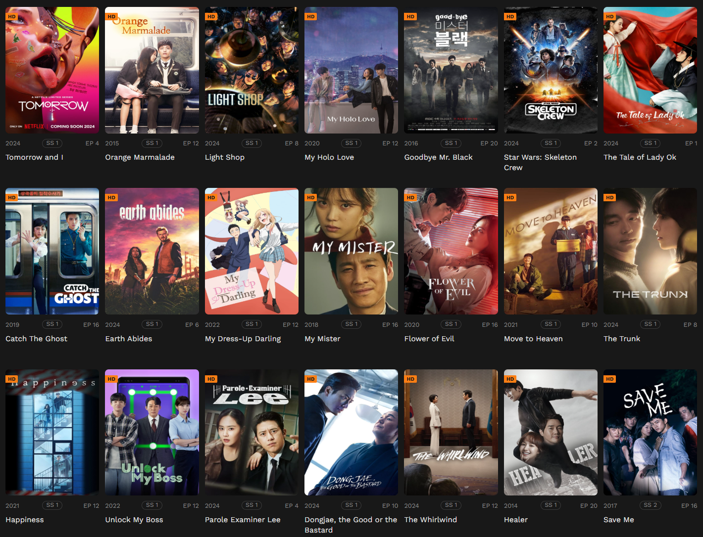

Kissasian - Stream Asian Dramas & Movies in HD with English Subtitles
- Kissasian live
- Kissasian TV live
- Kissasian Official live
Kissasian is your ultimate destination for streaming Asian dramas and movies online in stunning HD quality. Enjoy a vast collection of the latest and classic titles, all with English subtitles. Our user-friendly platform ensures seamless browsing and fast streaming. Discover captivating stories, vibrant characters, and an immersive viewing experience—all at your fingertips!
Stream Asian Dramas & Movies in HD with English Subtitles on Kissasian
Kissasian is the ultimate destination for streaming high-quality Asian dramas and movies. With a vast library of both popular and hidden gems, you can enjoy your favorite shows in stunning HD resolution—complete with English subtitles. Whether you’re into heartwarming romances, thrilling action, or historical epics, there’s something for everyone at Kissasian.
Why Choose Kissasian?
At Kissasian, we’re passionate about bringing you the best of Asian entertainment. Here’s why our platform stands out:
- Seamless Streaming: Enjoy a buffer-free, HD streaming experience.
- English Subtitles: Every drama and movie comes with English subtitles, making it accessible for global audiences.
- No Account Needed: Start watching instantly without the need for creating an account.
- Free Access: All content is available for free—no hidden fees or subscriptions required.
What Types of Content Does Kissasian Offer?
Kissasian features a wide variety of Asian content, from fan-favorites to hard-to-find titles:
- Asian Dramas: Romantic comedies, historical sagas, mysteries, and more.
- Asian Movies: Action, horror, comedy, thrillers, and everything in between.
- Variety Shows: A mix of reality and entertainment shows showcasing Asian culture.
Key Features of Kissasian
- HD Streaming Quality: Every title is available in high-definition, so you don’t miss any of the action.
- Free & Ad-Supported: Watch your favorite content without a subscription, though ads help keep it free.
- Fast & Easy Navigation: A user-friendly interface makes it easy to browse and find exactly what you're looking for.
- Constantly Updated Library: New titles are added regularly, so there's always something fresh to watch.
How Safe Is Kissasian?
While Kissasian provides a free and accessible streaming experience, we recommend using a VPN to protect your privacy and stay safe while browsing. This adds an extra layer of security, ensuring that your online activity remains private.
Is Kissasian Legal?
The legality of streaming content on Kissasian can vary depending on your location. We always encourage users to check local copyright laws before streaming content. Additionally, we recommend using a VPN for enhanced security and privacy.
Can I Watch Kissasian Without an Account?
Yes! Kissasian does not require you to create an account. Simply visit the site and start streaming your favorite dramas and movies right away. It’s perfect for viewers who want an instant, no-fuss experience.
Top Alternatives to Kissasian
If you're exploring other platforms, here are some great alternatives for streaming Asian dramas and movies:
- Dramacool
- Kissasian (Obviously!)
- Viki
- AsianCrush
- MyAsianTV
Frequently Asked Questions (FAQs)
Can I Watch Kissasian Content Offline?
Currently, Kissasian does not offer offline viewing. Keep an eye out for future updates, though, as offline functionality may be added soon.
How Can I Stream in 4K HD on Kissasian?
Some titles on Kissasian are available in 4K resolution. You can select 4K content from the library for the highest quality streaming experience.
Why Are There Ads on Kissasian?
As a free platform, Kissasian relies on ads to support its operations and bring you the content you love without any subscription fees.
What to Do If Kissasian Isn’t Working?
If you're experiencing technical issues, try refreshing the page or checking your internet connection. If the problem persists, visit the Kissasian support page for troubleshooting tips or to report the issue.
Conclusion
Kissasian offers the best streaming experience for Asian drama and movie lovers. With no account required, high-quality HD streaming, and a user-friendly interface, it’s the go-to platform for on-demand entertainment. Start exploring today and enjoy endless hours of captivating content!